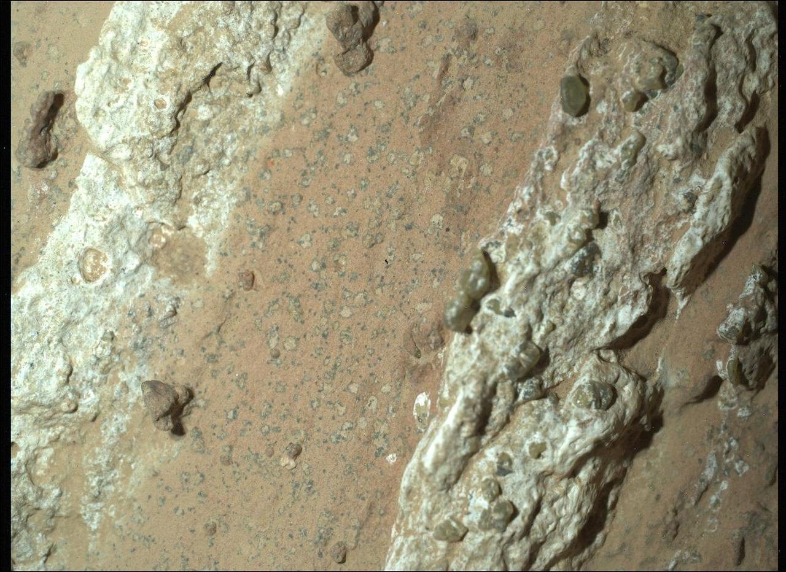
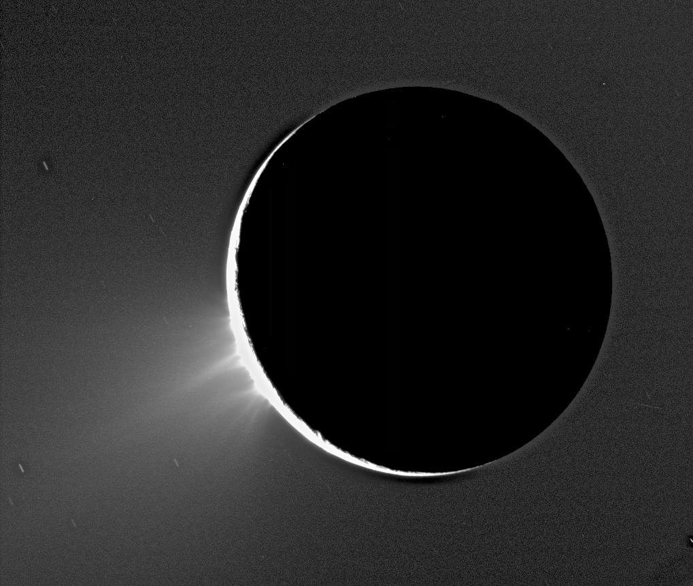
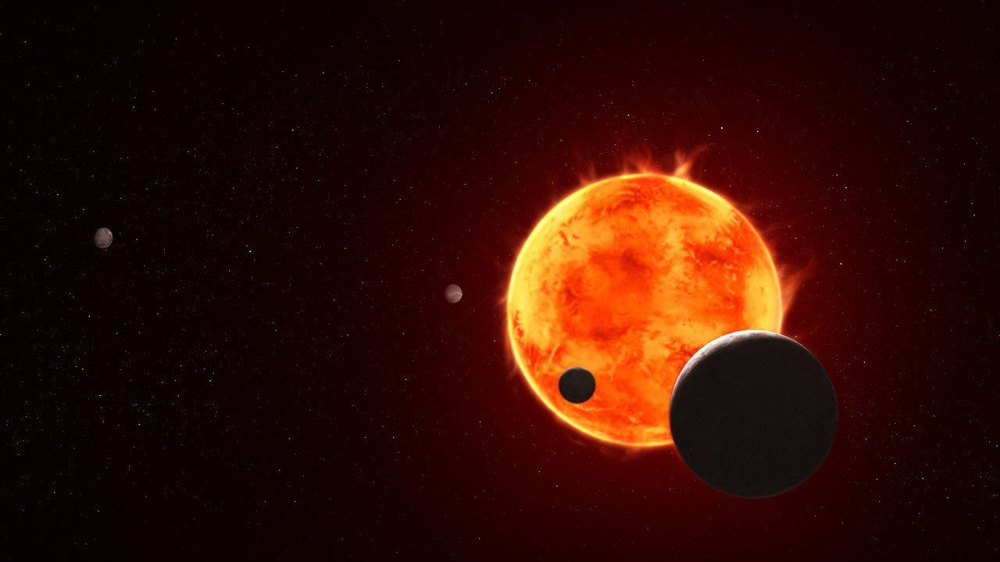
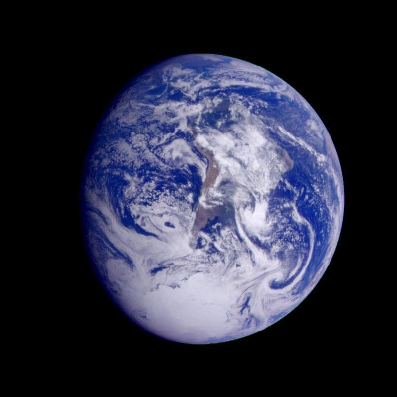

지구 밖에도 생명이 있을까요? 인류는 오래전부터 이 질문을 던져 왔지만, 지금처럼 답에 가까이 다가간 적은 없습니다. 2025년 9월 NASA는 화성 탐사 로버 퍼서비어런스가 찾은 암석을 두고 "화성에서 생명 발견에 가장 가까이 다가간 순간"이라고 발표했습니다.
이번 호에서는 과학자들이 생명을 찾고 있는 네 곳을 차례로 살펴볼 겁니다. 한때 물이 흐르던 화성, 두꺼운 얼음 밑에 바다를 숨긴 목성의 위성 유로파와 토성의 위성 엔셀라두스, 그리고 약 40광년 떨어진 지구 크기의 외계행성 TRAPPIST-1e입니다. 마지막으로 생명을 찾을 때 중요한 단서로 생각하는 물보다 중요한 것에 대해서 이야기도 함께 담았습니다.
생명이 살려면 무엇이 필요할까?
과학자들은 지구 생명을 기준으로 세 가지를 찾습니다. 액체 상태의 물, 생명의 재료가 되는 원소, 그리고 생명 활동에 쓸 에너지입니다. (NASA)
- 액체 상태의 물: 영양분을 녹여 실어 나르고, 생명에 필요한 화학 반응이 일어나는 무대입니다.
- 생명의 재료: 탄소·수소·질소·산소·인·황 같은 원소입니다. 이 가운데 인은 DNA를 이루는 필수 원소지만 생명에 꼭 필요한 원소 가운데 가장 드뭅니다. (NASA JPL)
- 에너지: 햇빛, 또는 바다 밑에서 뜨거운 물과 암석이 반응하며 나오는 화학 에너지입니다.
생명 거주 가능 영역, '골디락스 존'
별에서 너무 가깝지도 멀지도 않아 행성 표면에 물이 액체로 있을 수 있는 거리를 말합니다. 다만 이 영역에 있다고 해서 물이나 생명이 보장되지는 않습니다. (NASA)
흥미로운 점은 이번 호의 후보 중 유로파와 엔셀라두스가 이 영역에서 한참 벗어나 있다는 것입니다. 유로파는 목성의 중력이 얼음 껍질을 늘였다 줄이기를 반복하며 내는 열 덕분에 바다가 얼지 않습니다. (NASA) 햇빛이 닿지 않아도 생명이 살 만한 곳이 있을 수 있다는 뜻입니다.
화성: 한때 물이 흐르던 행성
지금의 화성은 춥고 메마른 사막이지만, 아주 먼 옛날에는 강이 흐르고 호수가 고여 있었습니다. 퍼서비어런스가 2021년 2월 내려앉은 예제로 크레이터도 수십억 년 전에는 지름 약 35km, 깊이 약 30m의 호수였습니다. 강이 실어 온 퇴적물이 쌓인 삼각주는 화석을 잘 보존하는 곳이라 생명의 흔적을 찾기에 알맞습니다. (NASA JPL)
'표범 무늬' 암석, 생명의 흔적일까
2024년 7월 퍼서비어런스는 옛 강줄기였던 네레트바 계곡에서 '체야바 폭포'라는 암석을 찾았습니다. 표면에는 표범 무늬 같은 작은 점들이 박혀 있었습니다. 점 속에서는 비비아나이트(인산철)와 그레이가이트(황화철)라는 광물이 나왔는데, 지구에서는 미생물이 에너지를 얻는 과정에서 이런 광물이 만들어지기도 합니다. (NASA JPL)
- "생명 발견에 가장 가까이 다가간 순간": NASA는 2025년 9월 10일 이 결과를 학술지 '네이처'에 발표하며 이렇게 평가했습니다.
- 아직은 '후보': 생명이 없어도 일어나는 화학 반응으로 같은 광물이 생길 수 있습니다. NASA 과학자들도 그 가능성이 낮을 뿐 "배제할 수는 없다"고 말합니다.

"확인하려면 지구로 가져와야 하는데"
확실히 알려면 시료를 지구 실험실에서 분석해야 합니다. 그런데 2026년 1월 미국 의회는 NASA의 화성 시료 회수(MSR) 사업에 예산을 주지 않기로 했고, 퍼서비어런스가 모은 30개 넘는 시료는 당분간 화성에 남게 됐습니다. (Live Science, The Register)
대신 다른 나라들이 나섭니다. 중국은 2028년 톈원 3호를 발사해 2031년 화성 시료를 지구로 가져올 계획입니다. 유럽의 로절린드 프랭클린 로버는 이르면 2028년 말 발사돼, 땅속 2m까지 파고들어 과거 생명의 흔적을 찾습니다. (Live Science, The Register)
유로파: 얼음 아래 숨은 바다
목성의 위성 유로파는 얼음 껍질 아래에 짠 바다를 품고 있습니다. 이 바다에는 지구의 모든 바닷물을 합친 것보다 약 두 배 많은 물이 있을 것으로 추정됩니다. (NASA)
- 얼음 두께 약 29km: NASA의 목성 탐사선 주노가 유로파를 스쳐 지나며 잰 자료를 분석한 결과입니다. 2025년 12월 발표됐습니다. 얼음이 두꺼울수록 표면의 산소와 영양분이 바다까지 내려가는 길도 멀어집니다. (NASA JPL)
- 에너지: 목성의 방사선이 표면의 물 분자를 쪼개면 산소가 남습니다. 이 산소가 바다에 닿으면 미생물이 쓸 에너지가 될 수 있습니다. 바다 밑 암석 바닥의 열수 활동도 영양분을 공급할 수 있습니다. (NASA)
유로파 클리퍼, 2030년 도착
NASA의 유로파 클리퍼는 2024년 10월 14일 발사됐습니다. 2025년 3월 화성 곁을 지나며 속도를 얻었고, 다음 달인 12월에는 지구 곁을 지나며 한 번 더 속도를 얻습니다. 2030년 4월 목성 궤도에 들어간 뒤에는 유로파를 50번 가까이 스쳐 지나며 표면 약 25km 위까지 다가갑니다. (NASA)
클리퍼의 임무는 생명을 직접 찾는 것이 아니라, 유로파의 얼음 아래에 생명이 살 수 있는 환경이 있는지 확인하는 것입니다. (NASA)
엔셀라두스: 우주로 바닷물을 뿜는 얼음위성
토성의 작은 위성 엔셀라두스는 2005년 카시니 탐사선이 남극에서 솟구치는 물기둥을 발견하며 주목받았습니다. 얼음 지각의 뜨거운 틈으로 지하 바닷물이 우주로 뿜어져 나오는 것입니다. (NASA)
덕분에 카시니는 착륙하지 않고도 물기둥을 통과하며 바닷물을 '맛볼' 수 있었습니다. 그렇게 밝혀낸 것들은 이렇습니다.
- 에너지: 물기둥 기체의 약 1%가 수소였습니다. 바다 밑에서 뜨거운 물과 암석이 반응하고 있다는 증거로, 지구의 미생물처럼 수소와 이산화탄소로 메탄을 만들며 살아가는 생명이라면 먹이로 쓸 수 있습니다. 연구를 이끈 헌터 웨이트는 "생명을 찾지는 못했지만, 생명이 먹을 음식은 찾았다"고 말했습니다. (2017년, NASA)
- 인: 얼음 알갱이에서 인산염이 발견됐습니다. 엔셀라두스 바다의 인 농도는 지구 바다의 100배가 넘습니다. (2023년, NASA JPL)
- 새로운 유기물: 방금 뿜어져 나온 얼음 알갱이에서 이전에 보지 못한 유기 분자들을 확인했습니다. 더 복잡한 유기 화합물로 이어질 수 있는 재료입니다. (2025년, NASA JPL)

엔셀라두스는 이처럼 물과 에너지, 생명의 재료까지 세 가지 조건을 모두 갖춘 것으로 보입니다.
유럽, 2040년대 착륙선 구상
유럽우주국(ESA)은 2024년 목성·토성의 위성 후보 가운데 엔셀라두스를 차기 대형 임무의 1순위로 꼽았습니다. 2040년대 초 발사해 약 10년 뒤 도착하고, 얼음이 얇은 남극에 내려 물기둥에서 떨어진 바다 물질을 직접 분석하는 구상입니다. 목표는 과거나 현재의 생명 흔적을 찾는 것입니다. (ESA)
태양계 밖: 또 하나의 지구, TRAPPIST-1e
2017년 2월 22일 NASA는 물병자리 방향 약 40광년 떨어진 작고 차가운 별 TRAPPIST-1 주위에서 지구만 한 행성 7개를 찾았다고 발표했습니다. 한 별 주위에서 지구 크기 행성이 이렇게 많이 발견된 건 처음이었고, 그중 3개가 생명 거주 가능 영역 안에 있었습니다. (NASA)
그중 가장 주목받는 것이 네 번째 행성 TRAPPIST-1e입니다. 대기만 있다면 표면에 물이 있을 수 있는 거리를 돌고 있습니다. 달처럼 항상 같은 면만 별을 향하기 때문에, 바다가 행성 전체를 덮었거나 별을 마주한 쪽에만 있고 나머지는 얼음으로 둘러싸였을 수 있습니다. (NASA)

관건은 '대기가 있느냐'
- 제임스웹의 첫 결과 (2025년 9월): 행성이 별 앞을 지나는 장면 4번을 분석했습니다. 처음 갖고 있던 수소 대기는 별빛에 날아갔을 가능성이 크고, 금성·화성처럼 이산화탄소가 주성분인 대기일 가능성도 낮았습니다. 새로운 대기가 있을 가능성은 반반입니다. (NASA)
- 다음 관측: 제임스웹은 15번의 추가 관측을 진행하고 있습니다. 대기가 없는 맨 암석으로 보이는 안쪽 행성 b와 e를 연달아 관측해, 별의 신호와 행성 대기의 신호를 가려낼 계획입니다. (NASA)
애리조나대 연구를 이끈 수크리트 란잔은 이렇게 요약합니다. "대기가 있다면 살 수 있는 행성입니다. 문제는 대기가 정말 있느냐죠." (애리조나대)
물보다 더 중요한 건?
지금까지 살펴본 후보들은 모두 '물'을 기준으로 골랐습니다. 하지만 물은 생명이 '살 수 있다'는 조건일 뿐, 생명이 '살고 있다'는 증거는 아닙니다. 멀리서도 생명을 알아보게 해 주는 것은 오히려 식물, 곧 '나무'가 남기는 흔적입니다.
우주에서 본 지구, 생명의 증거는 식물이었다
1990년 12월, 목성으로 가던 NASA의 갈릴레오 탐사선이 지구 곁을 스쳐 지났습니다. 천문학자 칼 세이건은 이 기회에 "외계인이 지구를 지나간다면 생명을 알아챌 수 있을까"를 실험했고, 결과는 1993년 '네이처'에 실렸습니다. 갈릴레오가 찾아낸 생명의 신호는 세 가지였습니다. (Scientific American)
- 산소와 메탄: 두 기체가 함께 있다는 것은 누군가 계속 만들어 내고 있다는 뜻입니다. 생명이 없다면 이 둘은 함께 오래 남기 어렵습니다.
- 레드 에지: 땅을 덮은 식물이 남긴 빛의 신호입니다.
- 전파: 자연에서는 나오기 어려운 인공적인 전파입니다.

넓은 바다는 지구에 물이 많다는 것을 보여 줄 뿐입니다. 생명이 있다는 증거는 식물과 생명이 만든 기체에서 나왔습니다.
레드 에지: 나뭇잎이 보내는 신호
식물의 잎은 광합성에 쓰는 붉은빛은 흡수하고, 그보다 파장이 조금 긴 근적외선(약 700~750nm)은 갑자기 10배 가까이 강하게 반사합니다. 이 급격한 '계단'을 레드 에지라고 부릅니다. 과학자들은 먼 외계행성의 빛에서도 이런 신호를 찾을 수 있다고 봅니다. 다만 일부 광물도 비슷한 신호를 내기 때문에 신중하게 해석해야 합니다. (Seager 외, 2005)
식물은 행성을 바꾼다
- 산소를 채웠다: 약 4억 7천만 년 전부터 땅에 오른 초기 육상식물(주로 이끼류)은 대기 산소를 4억 2천만~4억 년 전 무렵 오늘날 수준으로 끌어올렸습니다. 이 산소 덕분에 크고 활발하게 움직이는 동물, 그리고 인간이 진화할 수 있었습니다. (ScienceDaily)
- 행성을 데운다: 숲은 맨땅보다 어두워 햇빛을 더 많이 흡수합니다. 2024년 이탈리아 연구팀의 계산에 따르면 식물로 덮인 행성은 더 따뜻해지고, 그만큼 생명 거주 가능 영역의 바깥 경계가 넓어집니다. 풀밭보다 숲이 많은 행성일수록 효과가 컸습니다. 연구진은 그 효과가 크지는 않지만 무시할 수는 없다고 밝혔습니다. (Universe Today)
- 문명의 조건이 된다: 불을 피우고 금속을 다루려면 대기 중 산소가 약 18% 이상이어야 합니다. 2023년 '네이처 천문학'에 실린 연구는 산소가 충분하지 않은 행성에서는 기술 문명이 나오기 어렵다고 주장했습니다. (ScienceDaily)
다음 망원경은 생명의 기체를 찾는다
NASA가 구상하는 차세대 우주망원경 '거주 가능 세계 관측선(HWO)'은 생명이 살 만한 행성 25곳을 직접 촬영하고, 대기에서 산소·메탄 같은 생명의 신호를 찾는 것을 목표로 합니다. (NASA)
물을 찾는 것이 생명 탐사의 첫걸음이라면, 나무가 남긴 흔적을 찾는 것은 마지막 증명이 될지도 모릅니다.
한눈에 보는 연표
점선 위는 이미 일어난 일, 아래는 목표입니다. 목표 연도는 예산과 개발 사정에 따라 바뀔 수 있습니다.
출처
생명의 조건
화성
- NASA JPL – 퍼서비어런스, 잠재적 생명 신호 발표 (2025.9.10)
- NASA JPL – 예제로 크레이터 호수의 역사
- Live Science – 화성 시료 회수 취소와 중국 톈원 3호 (2026.1.16)
- The Register – 미 의회 예산안, 화성 시료 회수 취소 (2026.1.16)
- The Register – 로절린드 프랭클린 로버, 2028년 발사 추진 (2026.4.17)
유로파·엔셀라두스
- NASA – 유로파 클리퍼 임무 일정
- NASA JPL – 주노, 유로파 얼음 두께 측정
- NASA – 카시니, 엔셀라두스 물기둥에서 수소 발견 (2017)
- NASA JPL – 엔셀라두스 바다에서 인 발견 (2023)
- NASA JPL – 엔셀라두스의 새로운 유기물 (2025)
- ESA – 엔셀라두스, ESA 대형 임무 1순위 (2024.3.25)
외계행성
- NASA – TRAPPIST-1 행성 7개 발견 (2017.2.22)
- NASA – 제임스웹, TRAPPIST-1e 관측 (2025.9.8)
- 애리조나대 – TRAPPIST-1e 새 분석 (2025.12.4)
물보다 더 중요한 건
- Scientific American – 갈릴레오가 지구에서 생명을 찾은 실험
- Seager 외 (2005) – 식물의 레드 에지, 외계 식물의 생명 신호
- ScienceDaily – 초기 육상식물이 대기 산소를 채웠다 (2016)
- Universe Today – 식생이 외계행성 기후에 미치는 영향 (2024)
- ScienceDaily – 기술 문명과 산소의 병목 (2024)
- NASA – 거주 가능 세계 관측선(HWO)